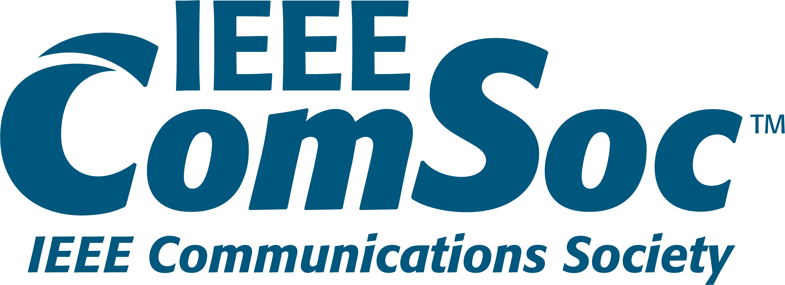

IEEE Communications Society HBTU Kanpur (SBC11519A)
IEEE ComSoc HBTU Kanpur
☰
IEEE is the world's largest technical professional organization dedicated to advancing technology for the benefit of humanity, with over 486,000 members globally.
The Institute of Electrical and Electronics Engineers (IEEE) is a non-profit organization founded in 1963 through the merger of the American Institute of Electrical Engineers and the Institute of Radio Engineers. It has its headquarters in New York City and an operations center in Piscataway, New Jersey. IEEE's mission is to foster technological innovation and excellence for the benefit of humanity, making it a trusted voice for engineering and technology professionals worldwide.

The IEEE Communication Society is the leading global organization dedicated to advancing communication technologies. With over 30,000 members worldwide, it serves as a trusted source for information, networking, and professional development for researchers, engineers, educators, and industry professionals.
Our mission is to promote the advancement of communication systems and technologies and support the professional growth of our members. Through conferences, publications, and educational programs, we provide a platform for innovation, collaboration, and leadership in the field of communications.

As an IEEE ComSoc Student member, you can develop the skills and practical experience you need as you approach your professional career.
In addition to enjoying a range of membership benefits, join your Student Chapter and connect with other students and engineering professionals in your area.
IEEE STUDENT BRANCH(STB) H.B.T.U. Kanpur is a student run organization affiliated with the Institute of Electrical and Electronics Engineers (IEEE).
IEEE Student branch provides opportunities for students to engage in technical activities, networking, events, workshops and competitions. Being a part of student branch can offer a valuable learning experiences, professional development, and connections within the industry.

IEEE Student Branch Chapters (SBCs) are technical sub-units of IEEE Student Branches that provide students with opportunities to engage in professional development, networking, and technical activities.
The IEEE Communications Society Student Branch Chapter at HBTU Kanpur is a student-led initiative dedicated to promoting learning, innovation, and collaboration in communication engineering and emerging technologies.
Through technical workshops, seminars, and research-oriented activities, the chapter provides students with opportunities to develop practical skills, explore modern communication systems, and connect with the global IEEE community.

To cultivate a community of innovative engineers and researchers who contribute to the advancement of communication technologies.